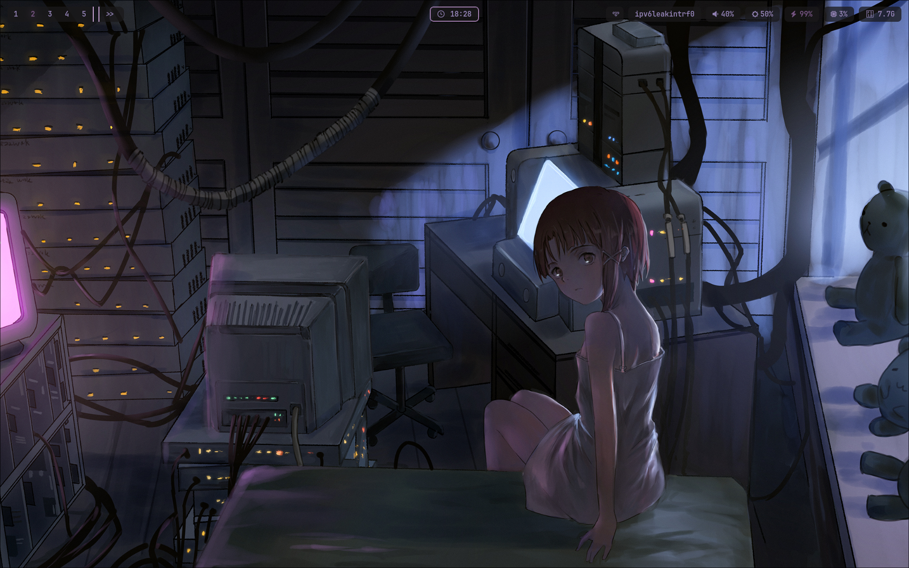
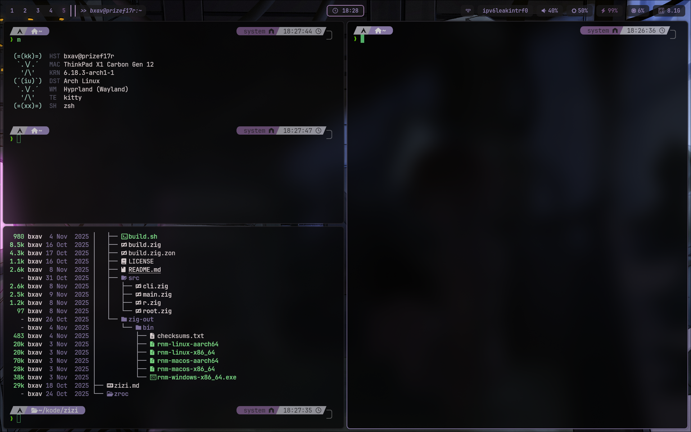
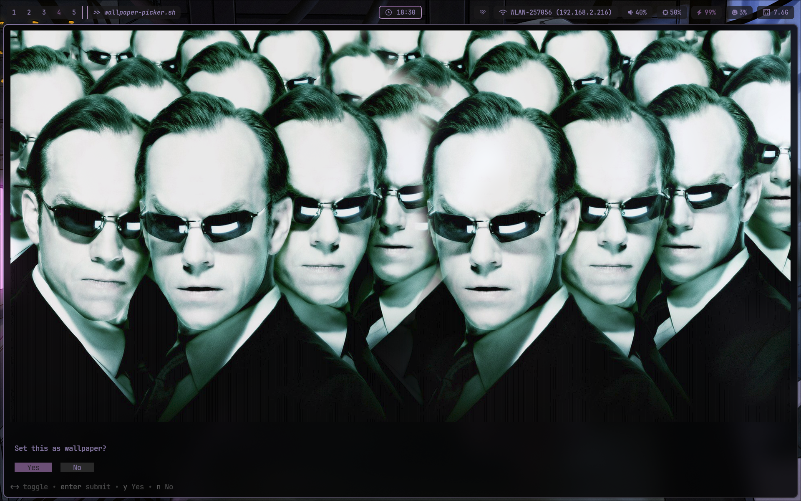
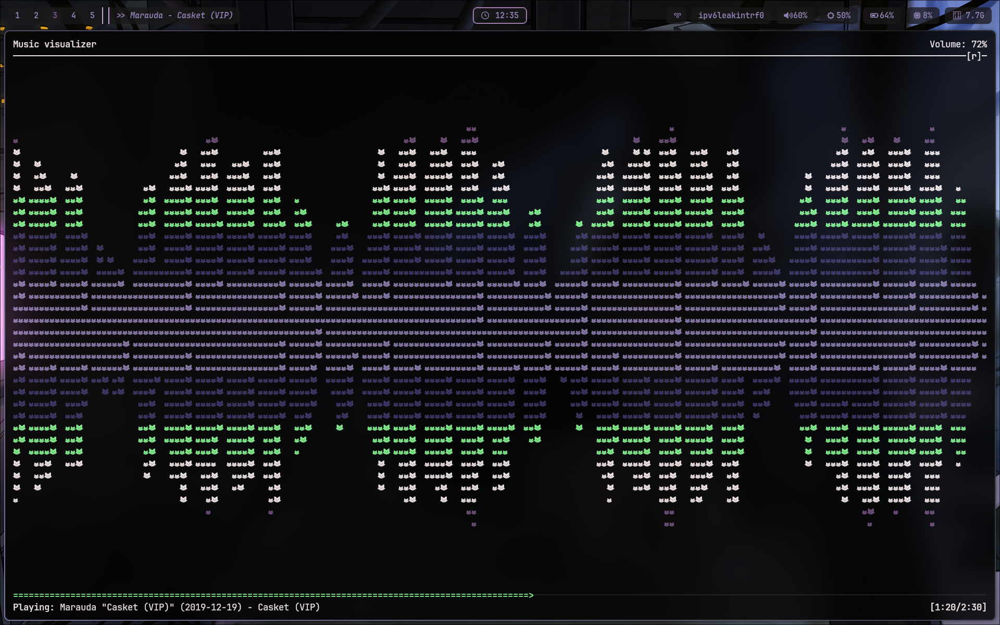
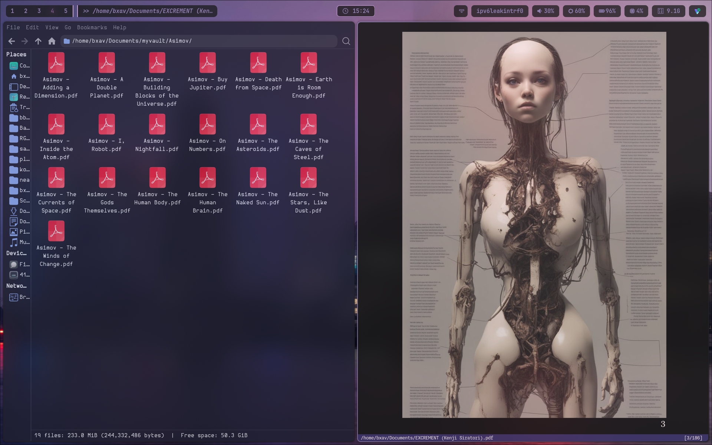

Welcome! As written here, this is the 🍚 I am currently rocking on my ThinkPad X1 Carbon Gen 12.
TL;DR
Jump straight to the config you seek!





To avoid repetition, you can find the palette here! As for the fetcher, the one you see in the second picture is macchina, and I will be sharing my config for it too.
Fetched
- Compositor/WM: hyprland
- Status Bar: waybar
- Launcher: rofi
- Notification Daemon: mako
- Terminal: kitty
- Shell: zsh
- Editor: micro
- Fetcher: macchina
- Document Viewer: zathura
Configs
~/.config/hypr/hyprland.lua
-- +----------+
-- | hyprconf |
-- | 4 |
-- | hyprland |
-- | now .lua |
-- +----------+
-- Colors
-- ++++++
local colors_ok, colors = pcall(dofile, os.getenv("HOME") .. "/.cache/wal/colors.lua")
if not colors_ok or type(colors) ~= "table" then
colors = {
primary = "rgb(56bf70)",
secondary = "rgb(8cff96)",
text = "rgb(fff3f2)",
surface = "rgb(acaab2)",
accent = "rgb(8f7fb0)",
highlight = "rgb(745380)",
background = "rgb(3b3366)",
crust = "rgb(1a181a)",
}
end
-- Monitors
-- ++++++++
hl.monitor({
output = "eDP-1",
mode = "preferred",
position = "auto",
scale = 1,
})
hl.config({
-- Overall shite
-- +++++++++++++
general = {
gaps_in = 2,
gaps_out = 8,
border_size = 2,
layout = "dwindle",
resize_on_border = false,
col = {
active_border = {
colors = { colors.accent, colors.crust },
angle = 45,
},
inactive_border = colors.crust,
},
},
dwindle = {
preserve_split = true,
-- force_split = 2,
},
-- Decor
-- +++++
decoration = {
rounding = 8,
active_opacity = 0.9,
inactive_opacity = 0.8,
fullscreen_opacity = 1.0,
-- screen_shader = "~/.config/hypr/shaders/bv.frag",
-- screen_shader = "~/.config/hypr/shaders/crt.frag",
screen_shader = "~/.config/hypr/shaders/selene.frag",
shadow = {
enabled = true,
range = 12,
render_power = 4,
color = "rgba(00000044)",
},
blur = {
enabled = true,
size = 6,
passes = 3,
new_optimizations = true,
ignore_opacity = true,
noise = 0.0117,
brightness = 1.0,
},
},
-- Input
-- +++++
input = {
kb_layout = "pt",
follow_mouse = 1,
sensitivity = 0.2,
touchpad = {
natural_scroll = true,
scroll_factor = 0.7,
},
},
-- Auto-hide cursor
-- ++++++++++++++++
-- cursor = {
-- inactive_timeout = 5,
-- },
})
-- Animationes
-- +++++++++++
hl.curve("wind", { type = "bezier", points = { { 0.05, 0.9 }, { 0.1, 1.05 } } })
hl.curve("winIn", { type = "bezier", points = { { 0.1, 1.1 }, { 0.1, 1.1 } } })
hl.curve("winOut", { type = "bezier", points = { { 0.3, -0.3 }, { 0, 1 } } })
hl.curve("linear", { type = "bezier", points = { { 1, 1 }, { 1, 1 } } })
hl.animation({ leaf = "windows", enabled = true, speed = 6, bezier = "wind", style = "slide" })
hl.animation({ leaf = "windowsIn", enabled = true, speed = 6, bezier = "winIn", style = "slide" })
hl.animation({ leaf = "windowsOut", enabled = true, speed = 5, bezier = "winOut", style = "slide" })
hl.animation({ leaf = "windowsMove", enabled = true, speed = 5, bezier = "wind", style = "slide" })
hl.animation({ leaf = "border", enabled = true, speed = 1, bezier = "linear" })
hl.animation({ leaf = "borderangle", enabled = true, speed = 30, bezier = "linear", loop = true })
hl.animation({ leaf = "fade", enabled = true, speed = 10, bezier = "default" })
hl.animation({ leaf = "workspaces", enabled = true, speed = 5, bezier = "wind" })
-- Exec-once shite
-- +++++++++++++++
hl.on("hyprland.start", function()
hl.exec_cmd("dbus-update-activation-environment --systemd DISPLAY WAYLAND_DISPLAY XDG_CURRENT_DESKTOP")
hl.exec_cmd("systemctl --user import-environment DISPLAY WAYLAND_DISPLAY XDG_CURRENT_DESKTOP")
-- Idle daemon 4 auto-locking & screen-off
hl.exec_cmd("hypridle")
-- Wpp daemon
hl.exec_cmd("hyprpaper")
hl.exec_cmd("kitty -e ~/.local/bin/wall-default.sh")
-- Main
hl.exec_cmd("waybar")
-- hl.exec_cmd("kitty")
-- hl.exec_cmd("rofi -show drun")
hl.exec_cmd("nm-applet --indicator")
hl.exec_cmd("polkit-gnome-authentication-agent-1")
-- Notifications
hl.exec_cmd("mako")
end)
-- Open windows in tiled mode
-- ++++++++++++++++++++++++++
hl.window_rule({
name = "tile-aseprite",
match = { class = "^Aseprite$" },
})
hl.window_rule({
name = "protonvpn-size-center",
match = { class = "^protonvpn-app$" },
size = "400 600",
center = true,
})
-- Binds (mod = SUPER)
-- +++++++++++++++++++
-- Volume
hl.bind("XF86AudioRaiseVolume", hl.dsp.exec_cmd("~/.config/hypr/scripts/volume.sh up"))
hl.bind("XF86AudioLowerVolume", hl.dsp.exec_cmd("~/.config/hypr/scripts/volume.sh down"))
hl.bind("XF86AudioMute", hl.dsp.exec_cmd("~/.config/hypr/scripts/volume.sh mute"))
-- Brightness
hl.bind("XF86MonBrightnessUp", hl.dsp.exec_cmd("~/.config/hypr/scripts/brightness.sh up"))
hl.bind("XF86MonBrightnessDown", hl.dsp.exec_cmd("~/.config/hypr/scripts/brightness.sh down"))
-- Launchers
hl.bind("SUPER + Space", hl.dsp.exec_cmd("rofi -show drun -theme ~/.config/rofi/themes/launcher-alien.rasi"))
hl.bind("SUPER + Return", hl.dsp.exec_cmd("kitty"))
hl.bind("SUPER + B", hl.dsp.exec_cmd("brave --enable-features=UseOzonePlatform --ozone-platform=wayland --force-device-scale-factor=1"))
hl.bind("SUPER + T", hl.dsp.exec_cmd("thunar"))
hl.bind("SUPER + Y", hl.dsp.exec_cmd("yazi"))
hl.bind("SUPER + Z", hl.dsp.exec_cmd("zeditor"))
hl.bind("SUPER + A", hl.dsp.exec_cmd("aseprite"))
hl.bind("SUPER + V", hl.dsp.exec_cmd("protonvpn-app"))
hl.bind("SUPER + L", hl.dsp.exec_cmd("ledger-live-desktop"))
hl.bind("SUPER + D", hl.dsp.exec_cmd("discord"))
hl.bind("SUPER + M", hl.dsp.exec_cmd("~/programs/monero-gui-v0.18.4.4/monero-wallet-gui"))
-- Wallpaper
hl.bind("SUPER + W", hl.dsp.exec_cmd("kitty -e ~/.local/bin/wallpaper-picker.sh"))
-- Color picker
hl.bind("SUPER + 0", hl.dsp.exec_cmd("~/bitpulse/shelles/cor.sh"))
-- Screenshots / casts
hl.bind("Print", hl.dsp.exec_cmd('grimblast copy output && notify-send "Screenshot" "Copied to clipboard"'))
hl.bind("SUPER + Print", hl.dsp.exec_cmd("grimblast copy area"))
hl.bind("SUPER + SHIFT + Print", hl.dsp.exec_cmd('grimblast save area "$HOME/Pictures/Screenshots/ss-$(date +%s).png" && notify-send "Screenshot saved"'))
hl.bind("XF86Favorites", hl.dsp.exec_cmd("~/.local/bin/go-cast.sh"))
hl.bind("SUPER + XF86Favorites", hl.dsp.exec_cmd("~/.config/hypr/scripts/region-cast.sh"))
-- Logout / Power
hl.bind("SUPER + Escape", hl.dsp.exec_cmd('rofi -show power -modi "power:~/.config/rofi/scripts/power.sh" -theme ~/.config/rofi/themes/power-alien.rasi'))
-- Window management
hl.bind("SUPER + Q", hl.dsp.window.close())
hl.bind("SUPER + F", hl.dsp.window.fullscreen({ action = "toggle" }))
hl.bind("SUPER + SHIFT + T", hl.dsp.window.float({ action = "toggle" }))
hl.bind("SUPER + P", hl.dsp.window.pseudo())
hl.bind("SUPER + J", hl.dsp.layout("togglesplit")) -- Note: was k->u, l->r, added J for down?
-- Reload Hyprland+Waybar
hl.bind("SUPER + SHIFT + R", hl.dsp.exec_cmd("~/.config/hypr/scripts/reload-dsk.sh"))
-- Focus
hl.bind("SUPER + h", hl.dsp.focus({ direction = "l" }))
hl.bind("SUPER + l", hl.dsp.focus({ direction = "r" }))
hl.bind("SUPER + k", hl.dsp.focus({ direction = "u" }))
-- "SUPER + j, movefocus, d"
-- Resize windows
hl.bind("SUPER + CTRL + h", hl.dsp.exec_cmd("hyprctl dispatch resizeactive -30 0"))
hl.bind("SUPER + CTRL + l", hl.dsp.exec_cmd("hyprctl dispatch resizeactive 30 0"))
hl.bind("SUPER + CTRL + k", hl.dsp.exec_cmd("hyprctl dispatch resizeactive 0 -30"))
hl.bind("SUPER + CTRL + j", hl.dsp.exec_cmd("hyprctl dispatch resizeactive 0 30"))
-- Move windows
hl.bind("SUPER + SHIFT + h", hl.dsp.window.move({ direction = "l" }))
hl.bind("SUPER + SHIFT + l", hl.dsp.window.move({ direction = "r" }))
hl.bind("SUPER + SHIFT + k", hl.dsp.window.move({ direction = "u" }))
hl.bind("SUPER + SHIFT + j", hl.dsp.window.move({ direction = "d" }))
-- Workspaces
for i = 1, 10 do
local key = i % 10 -- 10 maps to key 0
hl.bind("SUPER + " .. key, hl.dsp.focus({ workspace = i }))
hl.bind("SUPER + SHIFT +" .. key, hl.dsp.window.move({ workspace = i }))
end
-- Mouse binds (Lofree Touch)
-- M4 = 274 (wheel button), M5 = 275 (thumb-back), M6 = 276 (thumb-front)
hl.bind("mouse:274", hl.dsp.window.fullscreen({ action = "toggle" }))
hl.bind("mouse:275", hl.dsp.focus({ workspace = "e+1" }))
-- ", mouse:276, killactive,"
hl.bind("mouse:276", hl.dsp.exec_cmd("kitty"))
~/.config/hypr/hyprland.conf
############
# hyprconf #
# 4 #
# hyprland #
############
# Colors
# -------
source = ~/.config/hypr/colors.conf
# Monitors
# --------
monitor = eDP-1,preferred,auto,1
# Overall shite
# -------------
general {
gaps_in = 3
gaps_out = 8
border_size = 2
col.active_border = $accent $crust 45deg
col.inactive_border = $crust
layout = dwindle
resize_on_border = true
}
dwindle {
preserve_split = true
# force_split = 2
}
# Animationes
# -----------
animations {
enabled = true
bezier = wind, 0.05, 0.9, 0.1, 1.05
bezier = winIn, 0.1, 1.1, 0.1, 1.1
bezier = winOut, 0.3, -0.3, 0, 1
bezier = linear, 1, 1, 1, 1
animation = windows, 1, 6, wind, slide
animation = windowsIn, 1, 6, winIn, slide
animation = windowsOut, 1, 5, winOut, slide
animation = windowsMove, 1, 5, wind, slide
animation = border, 1, 1, linear
animation = borderangle, 1, 30, linear, loop
animation = fade, 1, 10, default
animation = workspaces, 1, 5, wind
}
# Decor
# -----
decoration {
rounding = 8
active_opacity = 0.9
inactive_opacity = 0.8
fullscreen_opacity = 1.0
shadow {
enabled = true
range = 12
render_power = 4
ignore_window = true
color = 0x44000000
}
blur {
enabled = true
size = 6
passes = 3
new_optimizations = true
ignore_opacity = true
noise = 0.0117
brightness = 1.0
}
}
# Input
# -----
input {
kb_layout = zimbabwe dollars
follow_mouse = 1
sensitivity = 0.2
touchpad {
natural_scroll = true
scroll_factor = 0.7
}
}
# Auto‑hide
# ---------
cursor {
inactive_timeout = 5
}
# Exec‑once shite
# ---------------
exec-once = dbus-update-activation-environment --systemd DISPLAY WAYLAND_DISPLAY XDG_CURRENT_DESKTOP
exec-once = systemctl --user import-environment DISPLAY WAYLAND_DISPLAY XDG_CURRENT_DESKTOP
...
# Open windows in tiled mode
# --------------------------
windowrule = tile class Aseprite
windowrule = size 400 600 initialClass protonvpn-app
windowrule = center initialClass protonvpn-app
windowrule = float initialClass protonvpn-app
# Binds (mod = SUPER)
# --------------------
# Volume
# ------
# bind = , XF86AudioRaiseVolume, exec, pactl set-sink-volume @DEFAULT_SINK@ +5%
# bind = , XF86AudioLowerVolume, exec, pactl set-sink-volume @DEFAULT_SINK@ -5%
# bind = , XF86AudioMute, exec, pactl set-sink-mute @DEFAULT_SINK@ toggle
bind = , XF86AudioRaiseVolume, exec, ~/.config/hypr/scripts/volume.sh up
bind = , XF86AudioLowerVolume, exec, ~/.config/hypr/scripts/volume.sh down
bind = , XF86AudioMute, exec, ~/.config/hypr/scripts/volume.sh mute
# Brightness
# ----------
# bind = , XF86MonBrightnessUp, exec, brightnessctl set +10%
# bind = , XF86MonBrightnessDown, exec, brightnessctl set 10%-
bind = , XF86MonBrightnessUp, exec, ~/.config/hypr/scripts/brightness.sh up
bind = , XF86MonBrightnessDown, exec, ~/.config/hypr/scripts/brightness.sh down
# Launchers
# ---------
bind = SUPER, Space, exec, rofi -show drun -theme ~/.config/rofi/themes/launcher-alien.rasi
bind = SUPER, Return, exec, kitty
bind = SUPER, B, exec, brave --enable-features=UseOzonePlatform --ozone-platform=wayland --force-device-scale-factor=1
bind = SUPER, T, exec, thunar
bind = SUPER, Y, exec, yazi
bind = SUPER, Z, exec, zeditor
bind = SUPER, A, exec, aseprite
bind = SUPER, V, exec, protonvpn-app
bind = SUPER, L, exec, ledger-live-desktop
bind = SUPER, D, exec, discord
bind = SUPER, M, exec, ~/programs/monero-gui-v0.18.4.4/monero-wallet-gui
# Wallpaper
# ---------
bind = SUPER, W, exec, kitty -e ~/.local/bin/wallpaper-picker.sh
#bind = SUPER, W, exec, rofi -show wallpaper -modi "wallpaper:~/.config/rofi/scripts/rofi-wallpaper.sh" -theme ~/.config/rofi/themes/b34uty-applet.rasi
# Color picker
# ------------
bind = SUPER, 0, exec, ~/bitpulse/shelles/cor.sh
# Screenshots
# -----------
bind = , Print, exec, grimblast copy output && notify-send "Screenshot" "Copied to clipboard"
bind = SUPER, Print, exec, grimblast copy area
bind = SUPER SHIFT,Print,exec, grimblast save area "$HOME/Pictures/Screenshots/ss-$(date +%s).png" && notify-send "Screenshot saved"
# Logout / Power
# --------------
#bind = SUPER, Escape, exec, wlogout
bind = SUPER, Escape, exec, rofi -show power -modi "power:~/.config/rofi/scripts/power.sh" -theme ~/.config/rofi/themes/power-alien.rasi
# Window management
# -----------------
bind = SUPER, Q, killactive
bind = SUPER, F, fullscreen
bind = SUPER SHIFT, T, togglefloating
bind = SUPER, P, pseudo
bind = SUPER, J, togglesplit
# Hyprland+Waybar reload
# ----------------------
bind = SUPER SHIFT, R, exec, ~/.config/hypr/scripts/reload-dsk.sh
# Focus / Move / Resize
# ---------------------
bind = SUPER, h, movefocus, l
bind = SUPER, l, movefocus, r
bind = SUPER, k, movefocus, u
# bind = SUPER, j, movefocus, d
# Resize windows
# --------------
bind = SUPER CTRL, h, resizeactive, -30 0
bind = SUPER CTRL, l, resizeactive, 30 0
bind = SUPER CTRL, k, resizeactive, 0 -30
bind = SUPER CTRL, j, resizeactive, 0 30
# Move windows
# ------------
bind = SUPER SHIFT, h, movewindow, l
bind = SUPER SHIFT, l, movewindow, r
bind = SUPER SHIFT, k, movewindow, u
bind = SUPER SHIFT, j, movewindow, d
# Switch workspace
# ----------------
bind = SUPER, 1, workspace, 1
bind = SUPER, 2, workspace, 2
bind = SUPER, 3, workspace, 3
bind = SUPER, 4, workspace, 4
bind = SUPER, 5, workspace, 5
# Move active window to workspace
# -------------------------------
bind = SUPER SHIFT, 1, movetoworkspace, 1
bind = SUPER SHIFT, 2, movetoworkspace, 2
bind = SUPER SHIFT, 3, movetoworkspace, 3
bind = SUPER SHIFT, 4, movetoworkspace, 4
bind = SUPER SHIFT, 5, movetoworkspace, 5
# Mouse‑buttons (Lofree Touch)
# ----------------------------
# M4 = 274 (wheel button), M5 = 275 (thumb-back), M6 = 276 (thumb-front)
bindl = , mouse:274, fullscreen, toggle
bindl = , mouse:275, workspace, e+1
# bindl = , mouse:276, killactive,
bindl = , mouse:276, exec, kitty
~/.config/hypr/colors.conf
##############
# hyprcolors #
# 4 #
# hyprland #
##############
$primary = rgb(56bf70) # Green
$secondary = rgb(8cff96) # Soft Green
$text = rgb(fff3f2) # White
$surface = rgb(acaab2) # Grey
$accent = rgb(8f7fb0) # Lavender
$highlight = rgb(745380) # Purple
$background = rgb(3b3366) # Blue
$crust = rgb(1a181a) # Black
~/.config/waybar/config
{
"layer": "top",
"position": "top",
"height": 40,
"spacing": 10,
"margin-top": 10,
"margin-left": 16,
"margin-right": 16,
"modules-left": [
"hyprland/workspaces",
"hyprland/window"
],
"modules-center": [
"clock"
],
"modules-right": [
"custom/protonvpn",
"network",
"pulseaudio",
"backlight",
"battery",
"cpu",
"memory",
"tray"
],
// Modules
"hyprland/workspaces": {
"format": "{id}",
"persistent-workspaces": {
"1": [],
"2": [],
"3": [],
"4": [],
"5": []
},
"on-click": "activate"
},
"hyprland/window": {
"format": " >> {}",
"max-length": 40,
"separate-outputs": true,
"tooltip": false
},
"clock": {
"format": " {:%H:%M}",
"tooltip-format": "{:%A, %d %B %Y}"
},
"custom/protonvpn": {
"format": "",
"on-click": "~/.config/waybar/scripts/on_click_protonvpn.sh",
"tooltip": false
},
"network": {
"format-wifi": " {essid} ({ipaddr})",
"format-ethernet": " {ipaddr}",
"format-disconnected": " Disconnected",
"tooltip": false
},
"pulseaudio": {
"format": "{icon} {volume}%",
"format-muted": " Muted",
"format-icons": {
"default": ["", ""]
},
"scroll-step": 5,
"on-click": "~/.config/hypr/scripts/volume.sh mute",
"tooltip": false
},
"backlight": {
"format": " {percent}%",
"on-scroll-up": "brightnessctl set +5%",
"on-scroll-down": "brightnessctl set 5%-",
"tooltip": false
},
"battery": {
"format": "{icon} {capacity}%",
"format-charging": " {capacity}%",
"format-plugged": " {capacity}%",
"format-icons": ["", "", "", "", ""],
"states": { "warning": 30, "critical": 15 }
},
"cpu": { "format": " {usage}%" },
"memory": { "format": " {used:0.1f}G" },
"tray": { "icon-size": 18, "spacing": 10 }
}
~/.config/waybar/style.css
/* Alien Microbes w/ transparency */
@define-color base alpha(#1a181a, 0.75);
@define-color surface alpha(#3b3366, 0.85);
@define-color highlight #745380;
@define-color text #8f7fb0;
@define-color white #fff3f2;
/* Global shite */
* {
font-family: "JetBrainsMono Nerd Font", monospace;
/* font-family: "Pixeloid Mono", monospace; */
font-size: 15px;
font-weight: bold;
min-height: 0;
border: none;
border-radius: 0;
}
window#waybar {
background: transparent;
}
#clock, #battery, #pulseaudio, #cpu, #memory, #tray, #backlight,
#custom-protonvpn, #network {
background-color: @base;
color: @text;
border-radius: 8px;
/* border: 2px ridge @highlight; */
margin: 4px 0;
padding: 2px 14px;
}
/* Workspace and active window */
#workspaces, #window {
background-color: @base;
color: @text;
margin: 4px 0;
padding: 2px 0;
}
#workspaces {
border-radius: 8px 0 0 8px;
border-right: 2px inset @highlight;
}
#window {
border-radius: 0 10px 10px 0;
padding-right: 12px;
}
/* Stylin */
#workspaces button {
padding: 0 10px;
color: @text;
}
#workspaces button:hover {
background-color: @highlight;
border-radius: 8px;
}
#workspaces button.active {
color: @highlight;
text-shadow: 0 0 8px @highlight;
}
#window {
color: @text;
padding-left: 4px;
font-style: italic;
border-left: 2px outset @highlight;
}
#clock {
font-size: 15px;
border: 2px ridge @highlight;
}
#pulseaudio.muted, #network.disconnected {
color: @highlight;
}
#battery.charging,
#battery.plugged {
color: @highlight;
}
#battery.warning,
#battery.critical {
color: @highlight;
animation: battery-blink 1s infinite alternate;
}
@keyframes battery-blink {
to {
background-color: @highlight;
color: @base;
}
}
~/.config/rofi/config.rasi
@theme "~/.config/rofi/themes/launcher-alien.rasi"
configuration {
modi: "drun,run,window";
show-icons: true;
icon-theme: "Papirus-Dark";
drun-display-format: "{icon} {name}";
display-drun: "Apps:";
display-run: "Run:";
display-window: "Windows:";
}
~/.config/rofi/colors.rasi
* {
background: rgba(26,24,26,0.5); /* #1a181a, 50% */
background-alt: rgba(26,24,26,0.8); /* #1a181a, 80% */
foreground: #8f7fb0;
selected: #8f7fb0;
active: rgba(140,255,150,1);
urgent: #fff3f2;
}
~/.config/rofi/scripts/power.sh
#!/usr/bin/env zsh
if [[ -z $1 ]]; then
printf '%s\n' \
" Lock" \
"⏾ Suspend" \
" Logout" \
" Reboot" \
" Shutdown"
exit 0
fi
case "$1" in
" Lock") hyprlock ;;
"⏾ Suspend") systemctl suspend ;;
" Logout") hyprctl dispatch exit ;;
" Reboot") systemctl reboot ;;
" Shutdown") systemctl poweroff ;;
esac
~/.config/rofi/themes/launcher-alien.rasi
@import "../colors.rasi"
configuration {
modi: "drun";
show-icons: true;
drun-display-format: "{name} [({generic})]";
window-format: "{w} · {c} · {t}";
}
window {
transparency: "real";
location: center;
anchor: center;
fullscreen: true;
width: 1366px;
height: 768px;
margin: 0px;
padding: 0px;
border: 0px;
background-color: @background;
cursor: "default";
}
mainbox {
spacing: 20px;
padding: 22% 34%; /* centers the panel nicely */
background-color: transparent;
children: [ "inputbar", "listview" ];
}
inputbar {
spacing: 10px;
padding: 20px;
border-radius: 20px;
background-color: @background-alt;
text-color: @foreground;
children: [ "entry" ];
}
entry {
background-color: transparent;
text-color: inherit;
cursor: text;
placeholder: "Type to search apps…";
placeholder-color: inherit;
vertical-align: 0.5;
horizontal-align: 0.5;
}
listview {
columns: 1;
lines: 12;
cycle: true;
dynamic: true;
scrollbar: false;
spacing: 10px;
padding: 30px;
border-radius: 20px;
background-color: @background-alt;
text-color: @foreground;
}
element, element-text, element-icon, textbox, entry, listview {
background-color: transparent; /* kill any default white */
}
element {
spacing: 10px;
padding: 8px;
border-radius: 12px;
background-color: @background-alt; /* card row */
text-color: @foreground;
cursor: pointer;
}
element selected.normal {
background-color: @selected;
text-color: #1a181a;
}
element-icon { size: 32px; }
element-text {
highlight: none;
vertical-align: 0.5;
horizontal-align: 0.0;
}
~/.config/rofi/themes/power-alien.rasi
@import "../colors.rasi"
configuration { show-icons: false; }
* {
list-spacing: 16px;
element-padding: 15px 20px;
element-radius: 18px;
general-radius: 100%;
element-font: "JetBrainsMono Nerd Font 16";
}
window {
transparency: "real";
location: center;
anchor: center;
fullscreen: false;
margin: 0px;
padding: 0px;
border: 0px;
background-color: @background;
cursor: "default";
}
mainbox {
spacing: 0px;
padding: 32px;
background-color: transparent;
children: [ "listview" ];
}
listview {
columns: 5;
lines: 1;
fixed-columns: true;
fixed-height: true;
dynamic: false;
cycle: true;
scrollbar: false;
spacing: var(list-spacing);
margin: 0px;
padding: 0px;
background-color: transparent;
text-color: @foreground;
}
element, element-text, element-icon, textbox {
background-color: transparent;
}
element {
padding: var(element-padding);
border-radius: var(element-radius);
background-color: @background-alt;
text-color: @foreground;
cursor: pointer;
}
element-text {
font: var(element-font);
highlight: none;
vertical-align: 0.5;
horizontal-align: 0.5;
}
element selected.normal {
background-color: @selected;
text-color: #1a181a;
}
~/.config/mako/config
# Palette
background-color=#1a181a
text-color=#fff3f2
border-color=#56bf70
progress-color=#56bf70
# General
font=JetBrainsMono Nerd Font 10
width=350
layer=overlay
anchor=top-right
sort=-time
# Layout & Style
margin=10
padding=15
border-size=2
border-radius=8
icons=1
max-icon-size=64
default-timeout=2000
ignore-timeout=0
max-visible=5
# States
[urgency=low]
border-color=#8cff96
text-color=#8cff96
[urgency=high]
border-color=#acaab2
text-color=#acaab2
ignore-timeout=1
default-timeout=0
[grouped]
text-color=#56bf70
~/.config/kitty/kitty.conf
# Palette
include ~/.config/kitty/colors.conf
# Font
font_family JetBrainsMono NerdFont
font_size 13
bold_font auto
italic_font auto
bold_italic_font auto
# Window look & feel
window_padding_width 10
background_corner_radius 8
hide_window_decorations titlebar-and-corners
background_opacity 0.90
# Behaviour
scrollback_lines 10000
enable_audio_bell no
# Key overrides
# map ctrl+shift+c copy_to_clipboard
# map ctrl+shift+v paste_from_clipboard
map ctrl+shift+f launch --stdin stdin://less
# map ctrl+shift+r send_text "source ~/.zshrc\n"
~/.config/kitty/colors.conf
foreground #fff3f2
selection_background #acaab2
selection_foreground #1a181a
cursor #56bf70
color0 #1a181a
color1 #56bf70
color2 #8cff96
color3 #fff3f2
color4 #8f7fb0
color5 #745380
color6 #3b3366
color7 #acaab2
color8 #acaab2
color9 #56bf70
color10 #8cff96
color11 #fff3f2
color12 #8f7fb0
color13 #745380
color14 #3b3366
color15 #fff3f2
~/.config/micro/settings.json
{
"colorscheme": "alienmicro"
}
~/.config/micro/colorschemes/alienmicro.micro
color-link default "#fff3f2"
color-link background "#3b3366"
color-link comment "#acaab2"
color-link constant "#56bf70"
color-link identifier "#fff3f2"
color-link statement "#8cff96"
color-link type "#8f7fb0"
color-link special "#745380"
color-link error "bold #ff0000"
# color-link cursor-line "#745380,#3b3366"
color-link selection "#acaab2,#1a181a"
color-link statusline "#1a181a,#56bf70"
~/.zshrc
echo "Loading .zshrc at $(date)" >> ~/zsh_load.log
export PATH="blablabla"
# Load Powerlevel10k configuration
[[ ! -f ~/.p10k.zsh ]] || source ~/.p10k.zsh
typeset -g POWERLEVEL9K_INSTANT_PROMPT=quiet
export ZSH="$HOME/.oh-my-zsh"
ZSH_THEME="powerlevel10k/powerlevel10k"
plugins=(
git
zsh-syntax-highlighting
zsh-autosuggestions
command-not-found
fzf
)
source $ZSH/oh-my-zsh.sh
# Only my most useful
alias vi='nvim'
alias hx='helix'
alias ls='exa --icons --group-directories-first --long --modified --header'
alias la='exa -la --group-directories-first --icons --color=auto'
alias ll='exa -l --no-permissions --icons --color=auto'
alias reload="source ~/.zshrc"
alias meteora='curl wttr.in/City'
alias getrack='yt-dlp --extract-audio --audio-format opus --output "~/Music/%(title)s.%(ext)s"'
alias m="macchina"
alias hyprconf="micro ~/.config/hypr/hyprland.conf"
alias hyprcolors="micro ~/.config/hypr/colors.conf"
eval "$(zoxide init zsh)"
eval $(thefuck --alias)
~/.config/macchina/macchina.toml
# Specifies the network interface to use for the LocalIP readout
interface = "wlan0"
# Lengthen uptime output
long_uptime = false
# Lengthen shell output
long_shell = false
# Lengthen kernel output
long_kernel = false
# Toggle between displaying the current shell or your user's default one.
current_shell = true
# Toggle between displaying the number of physical or logical cores of your
# processor.
physical_cores = true
# Disks to show disk usage for. Defaults to `["/"]`.
disks = ["/", "/home/user"]
# Show percentage next to disk information
# disk_space_percentage = true
# Show percentage next to memory information
# memory_percentage = true
# Themes need to be placed in "$XDG_CONFIG_DIR/macchina/themes" beforehand.
theme = "Moie"
# Displays only the specified readouts.
show = ["Host", "Machine", "Kernel", "Distribution", "WindowManager", "Terminal", "Shell"]
~/.config/macchina/themes/Moie.toml
spacing = 1
padding = 0
hide_ascii = false
prefer_small_ascii = true
separator = ""
key_color = "#555568"
separator_color = "#eeb9c7"
[palette]
type = "Dark"
glyph = "||"
visible = false
[bar]
glyph = "-"
symbol_open = '['
symbol_close = ']'
hide_delimiters = true
visible = false
[box]
title = ""
border = "rounded" # plain, thick, double, rounded
visible = false
[box.inner_margin]
x = 1
y = 0
[custom_ascii]
color = "#b9eedc"
path = "~/ascii/dna-small.txt"
[randomize]
key_color = false
separator_color = false
[keys]
host = "HST"
kernel = "KRN"
battery = "BTT"
os = "OS"
de = "DE"
wm = "WM"
distro = "DST"
terminal = "TE"
shell = "SH"
packages = "PKG"
uptime = "UT"
memory = "MEM"
machine = "MAC"
local_ip = "IP"
backlight = "BKL"
resolution = "RES"
cpu_load = "CLD"
cpu = "CPU"
gpu = "GPU"
disk_space = "DSK"
~/.config/zathura/zathurarc
# Palette: Alien Microbes
set default-fg "#745380"
set default-bg "#1a181a"
set statusbar-fg "#fff3f2"
set statusbar-bg "#3b3366"
set font "Monaspace Neon NF"
set recolor true
set recolor-lightcolor "#fff3f2"
set recolor-darkcolor "#1a181a"
set recolor-keephue true
These configs can also be found in my Codeberg
repo
(WIP).
Rise